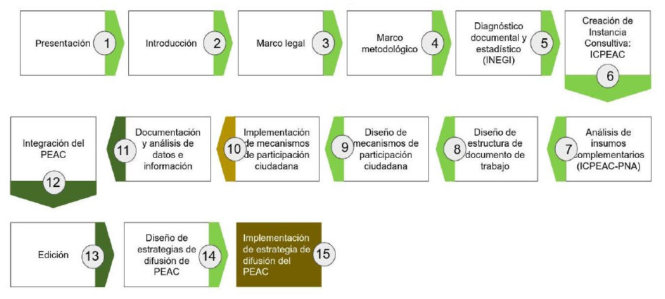
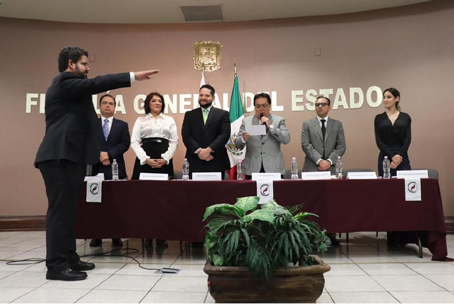
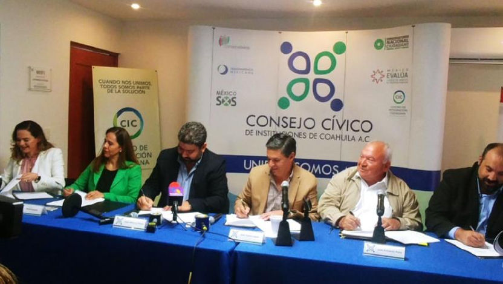
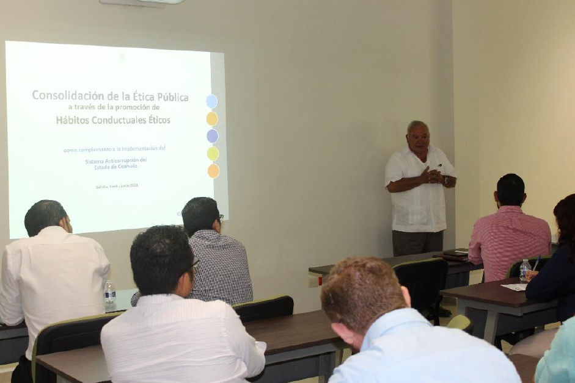
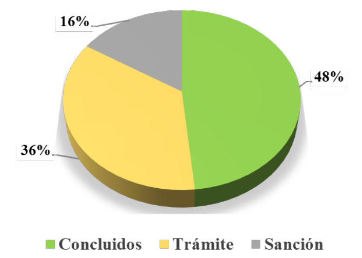
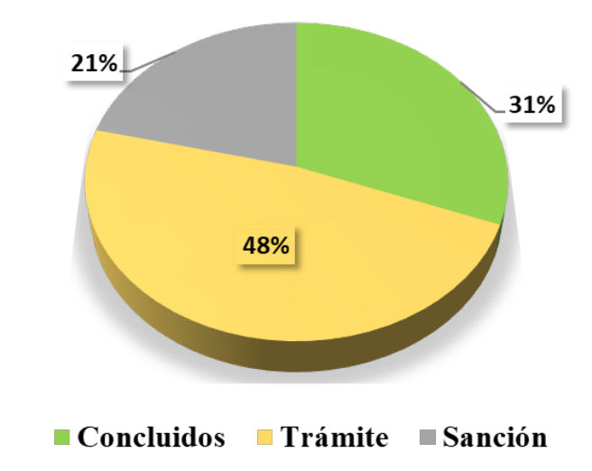

Informe Anual 2018-2019 del Comité Coordinador del Sistema Anticorrupción del Estado de Coahuila de Zaragoza
Descargar
Introducción
Con la elaboración del Informe Anual del Comité Coordinador del Sistema Anticorrupción del Estado de Coahuila de Zaragoza, se da cumplimiento al artículo 9 fracción XII de la Ley del Sistema Anticorrupción del Estado de Coahuila de Zaragoza, el cual señala que es facultad del Comité Coordinador:
La emisión de un informe anual que contenga los avances y resultados del ejercicio de sus funciones y de la aplicación de políticas y programas en la materia, los riesgos identificados, los costos potenciales generados y los resultados de sus recomendaciones, en los cuales se incluirá las respuestas de los Entes Públicos. Dicho informe será el resultado de las evaluaciones realizadas por la Secretaría Ejecutiva y será aprobado por la mayoría de los integrantes del Comité Coordinador, los cuales podrán realizar votos particulares, concurrentes o disidentes, sobre el mismo y deberán ser incluidos dentro del informe anual.
El siguiente informe contiene el Marco Legal con que el Sistema Estatal Anticorrupción se rige, además incluye tres de lo principales temas que se realizaron durante el 2018 y 2019. Primero, se destacarán los principales resultados de la implementación del proyecto Reto 100 días en el Sistema Anticorrupción de Coahuila. Segundo, la capacitación en materia de Indicadores impartido por el Instituto Nacional de Estadística y Geografía (INEGI), con el propósito de que se utilicen las herramientas adecuadas para la medición del trabajo realizado en materia anticorrupción principalmente. Tercero, el Avance en la Política Estatal Anticorrupción donde se hace explicito el Primer Diagnóstico Estadístico de la Corrupción en Coahuila y Primer Reporte Estadístico, además de los instrumentos de alineación para la PEAC.
Además, se propone la creación del Consejo Consultivo de la Política Estatal Anticorrupción de Coahuila de Zaragoza como órgano de apoyo, debido a que es de suma importancia contar con espacios para la colaboración e interacción con la ciudadanía, la academia y el empresariado durante las diferentes etapas y también se abarca sobre el Programa Interdisciplinario de Rendición de Cuentas (PIRC-CIDE), que tiene como objetivo principal estructurar acciones de investigación que puedan acompañar a los diferentes equipos y proyectos asegurando la pluralidad de enfoques y la complementariedad entre disciplinas vecinas tomando como eje principal la transversalidad de la rendición de cuentas.
Posteriormente, se describen los Resultados de los Programas y Acciones en Materia Anticorrupción de los integrantes del Comité Coordinador (CC) durante el periodo de 01 de agosto de 2018 al 31 de julio de 2019. Temas como capacitaciones, entrevistas, firmas de convenios y trabajos coordinados de los miembros del CC.
En el último apartado se informa sobre el estatus de los procedimientos iniciados en las entidades autónomas y municipios. Finalmente, se anexa información relacionada a la capacitación, cooperación, promoción y difusión del SAEC.
Marco Legal
El Sistema Estatal Anticorrupción del Estado de Coahuila de Zaragoza, tiene por objeto establecer principios, bases generales, políticas públicas y procedimientos para la coordinación entre las autoridades de los entes públicos en la prevención, detección y sanción de faltas administrativas y hechos de corrupción, así como la fiscalización y control de recursos públicos. Así mismo, es la instancia cuya finalidad es establecer, articular y evaluar la política en la materia, estableciendo bases de coordinación para homologarse con el Sistema Nacional.
Para realizar lo anterior, es necesario ajustar en todo momento las actividades realizadas de acuerdo a la normativa aplicada a nivel federal y estatal.
Constituciones Políticas
- Constitución Política de los Estados Unidos Mexicanos
- Constitución Política del Estado de Coahuila de Zaragoza
Leyes Federales
- Ley de Fiscalización y Rendición de Cuentas de la Federación
- Ley Federal de Responsabilidades de los Servidores Públicos
- Ley Federal de Transparencia y Acceso a la Información Pública
- Ley Federal del Trabajo
- Ley General de Contabilidad Gubernamental
- Ley General de Protección de Datos Personales en Posesión de Sujetos Obligados
- Ley General de Responsabilidades Administrativas
- Ley General de Transparencia y Acceso a la Información Pública
- Ley General del Sistema Nacional Anticorrupción
Leyes Locales
- Estatuto Jurídico para los Trabajadores al Servicio del Estado de Coahuila de Zaragoza
- Ley de Acceso a la Información Pública para el Estado de Coahuila de Zaragoza
- Ley de Adquisiciones, Arrendamientos y Contratación de Servicios del Estado de Coahuila de Zaragoza
- Ley de Entidades Paraestatales del Estado de Coahuila de Zaragoza
- Ley de Entrega-Recepción del Estado y Municipios de Coahuila de Zaragoza
- Ley de Obras Públicas y Servicios Relacionados con las mismas para el Estado de Coahuila de Zaragoza
- Ley de Protección de Datos Personales en Posesión de Sujetos Obligados del Estado de Coahuila de Zaragoza
- Ley de Rendición de Cuentas y Fiscalización Superior del Estado de Coahuila de Zaragoza
- Ley de Responsabilidades de los Servidores Públicos Estatales y Municipales del Estado de Coahuila de Zaragoza
- Ley del Sistema Anticorrupción del Estado de Coahuila de Zaragoza
- Ley Orgánica de la Administración Pública del Estado de Coahuila de Zaragoza
- Ley para Prevenir y Sancionar Prácticas de Corrupción En Los Procedimientos de Contratación Pública del Estado de Coahuila de Zaragoza y sus Municipios
Reglamentos Estatales
- Reglamento Interior de la Secretaría Ejecutiva del Sistema Anticorrupción del Estado de Coahuila de Zaragoza
- Lineamientos de Austeridad de la Secretaría Ejecutiva del Sistema Anticorrupción del Estado de Coahuila de Zaragoza
Acuerdos, lineamientos y recomendaciones
Sistema Anticorrupción del Estado de Coahuila
Reforma a la Ley del Sistema Anticorrupción del Estado de Coahuila de Zaragoza En el marco de la actualización jurídica y normativa, la Ley del Sistema Anticorrupción del Estado de Coahuila de Zaragoza, ha tenido tres reformas que han venido a dotar de mayor exigencia el funcionamiento del Sistema Estatal Anticorrupción, esto, al exigir que tanto el Comité Coordinador, como el propio Consejo de Participación Ciudadana, realicen sesiones ordinarias de sus plenos con frecuencia mensual, ello, con la finalidad de dar debido tratamiento y seguimiento a los temas de fiscalización, rendición de cuentas, transparencia y responsabilidades administrativas entre otros.
Las reformas que se han efectuado son las siguientes:
- En fecha 19 de marzo de 2019, se reformó el artículo 34, fracciones III y IV, en el cual fue modificad la edad para ser designado Secretario Técnico de la Secretaría Ejecutiva del Sistema Anticorrupción del Estado de Coahuila de Zaragoza. Anteriormente establecía como requisito el tener más de treinta años al día de la designación; sin embargo, con la nueva reforma ahora se incrementa a treinta y cinco años la edad mínima para participar en la convocatoria. Además, fue el poseer al día de la designación, una antigüedad mínima de diez años, con título profesional de nivel de licenciatura y contar con los conocimientos y experiencia relacionadas con la materia de esta Ley que le permitan el desempeño de sus funciones, anteriormente se requería una antigüedad de cinco años.
- De igual manera, en fecha 12 de abril de 2019, se reformó el artículo 13, el cual presenta la obligación actual del Comité Coordinador para sesionar ordinariamente una vez al mes. Anteriormente se tenía la obligación de sesionar solamente cada tres meses.
- Igualmente, en la misma fecha se reformó el artículo 20 de la citada Ley, en el cual establece ahora que el Consejo de Participación Ciudadana deberá reunirse en sesión ordinaria cada mes, previa convocatoria de su Presidente. Anteriormente el Consejo de Participación Ciudadana sesionaba una vez cada tres meses.
- En fecha 12 de julio de 2019, también fueron reformados los artículos 17 y 18, en los cuales establecen que en la integración de la Comisión de Selección y del Consejo de Participación Ciudadana, se deberá atender el principio de paridad de género. Se concluyó que en el Consejo de Participación Ciudadana tres de sus integrantes deberán pertenecer a un mismo género y, en la Comisión de Selección cinco de sus integrantes deberán pertenecer a un mismo género.
Reto 100 Días
Impulsamos la implementación del Reto 100 días
El Consejo de Participación Ciudadana propuso a los integrantes del Comité Coordinador la implementación del Proyecto Reto 100 días, orientado a transformar la dinámica operativa de modo que logren resultados conjuntos, significativos, de manera expedita, radical y sostenible.
El CPC gestionó el apoyo financiero ante la Agencia de los Estados Unidos para el Desarrollo Internacional (USAID por sus siglas en inglés) para aplicar la metodología Reto 100 días del Instituto de Resultados Rápidos (RRI por sus siglas en inglés) en el Sistema Anticorrupción de Coahuila.
El Sistema Anticorrupción del Estado de Coahuila de Zaragoza es pionero en la implementación del Reto 100 en esta materia en América Latina.
Una de las bondades de la aplicación de la metodología es la inclusión ciudadana en la resolución del problema, para ello, participaron activamente integrantes del Consejo Cívico de Instituciones Coahuila, del Consejo Cívico de Instituciones Laguna y de Participación Ciudadana 29; miembros de CANACINTRA, CANACO y COPARMEX; así como académicos de la Universidad Autónoma de Coahuila y la Universidad Carolina.
Objetivo del Reto
Mejorar las capacidades de prevención, investigación, substanciación, resolución y sanción de faltas administrativas y hechos de corrupción, a través de la innovación en los procesos, el fortalecimiento de capacidades de los servidores públicos y el uso de la tecnología.
Temática relevante para la opinión pública:
- Incrementar la respuesta del Sistema Estatal Anticorrupción a los delitos por hechos de corrupción, lo cual comprende mejorar los protocolos de investigación, judicializar las carpetas y concluir casos.
- Aumentar la resolución de los procedimientos de responsabilidad administrativa por faltas graves y no graves.
Resultados concretos
Como parte de este ejercicio, la Fiscalía Especializada en Delitos por Hechos de Corrupción consiguió la conclusión de 22 carpetas de investigación, es decir un incremento de 270 por ciento, con respecto a los últimos 15 meses, ello significó que 54 servidores públicos resarcieran el daño; además, se judicializaron 11 carpetas de investigación, alcanzado más del 600 por ciento de productividad, con 31 servidores públicos llevados ante sede judicial.
La Secretaría de Fiscalización y Rendición de Cuentas concluyó 50 procedimientos de responsabilidad administrativa contra funcionarios públicos, con lo cual, duplicó la resolución de dichos procedimientos.
También durante estos 100 días, el Consejo de la Judicatura del Poder Judicial del Estado aumentó la eficiencia en las resoluciones en más de 800 por ciento respecto al mismo periodo del 2018 (66 procedimientos), supera además, en 140 por ciento el número de casos resueltos en todo el 2018 (47 casos). Esto fue posible gracias a la implementación de innovaciones como la oralización del desahogo de pruebas y la creación de las unidades de notificación e investigadora.
Por lo que se refiere al Tribunal de Justicia Administrativa, se informa que en el período de tres meses que duró el Reto de 100 Días, se logró resolver el mismo número de asuntos que en el transcurso del año 2018.
En tanto, la Auditoría Superior del Estado modificó el Sistema Auditor, lo que permite automatizar observaciones a las entidades públicas y facilitar el trabajo de los órganos de control internos.
Innovaciones
- Tablero de Seguimiento de Carpetas de Investigación de la Fiscalía Especializada en Delitos por Hechos de Corrupción con el apoyo técnico de la Secretaría Ejecutiva del SAEC.
- Mejoramiento en los protocolos de investigación de la Fiscalía Especializada en Delitos por Hechos de Corrupción.
- Creación de dos Unidades, Investigadora y de Notificación en el Poder Judicial del Estado.
- Omisión de audiencias en el desahogo de pruebas para mejor proveer del Consejo de la Judicatura.
- Oralización del Procedimiento Administrativo Disciplinario.
- Generación de Código de Ética para el Poder Judicial del Estado.
- Implementación de mecanismo de queja anónima en el Poder Judicial del Estado.
- Plataforma de seguimiento a procedimientos de responsabilidad administrativa substanciados por los órganos internos de control de la administración pública.
- Inclusión de exhortos en las prescripciones declaradas en presuntas responsabilidades administrativas procedentes de observaciones no cuantificadas.
- Hacer más eficiente el Sistema Auditor de la Auditoría Superior del Estado.
Logros que da sostenibilidad a los resultados
- Alineación de objetivos institucionales (en la práctica).
- Mayor influencia ciudadana en los procesos de toma de decisiones.
- Fomento a la innovación y uso de la tecnología.
- Impulso a la transparencia y rendición de cuentas.
- Empoderamiento de las áreas operativas.
- Mejor diálogo interdisciplinario.
Video Reto 100 días
Indicadores INEGI: Taller de Construcción de Indicadores de Gestión Gubernamental
En el marco de las acciones emprendidas por el Comité Coordinador del SAEC, se llevó a cabo el “Taller paraConstrucción de Indicadores de Gestión Gubernamental”, con el objetivo de compartir un esquema de referencia, estrategias y metodología para la construcción de estos indicadores, los cuales permitirán la evaluación del cumplimiento de los objetivos y metas de la política estatal, las políticas integrales, y los programas y acciones que implemente el Sistema.
Este taller fue dividido en dos etapas, la primera consistió en un curso, el cual contó con la presencia de los integrantes del Consejo de Participación Ciudadana (CPC), personal operativo de la Auditoría Superior del Estado de Coahuila, Fiscalía Especializada en Delitos por Hechos de Corrupción, Secretaría de Fiscalización y Rendición de Cuentas, Consejo de la Judicatura del Poder Judicial del Estado, Instituto Coahuilense de Acceso aInformación Pública, Tribunal de Justicia Administrativa y la Secretaría Ejecutiva del Sistema Anticorrupción del Estado de Coahuila de Zaragoza.
El taller fue impartido por el Instituto Nacional de Estadística y Geografía (INEGI), en las instalaciones deUniversidad Autónoma de Coahuila campus Arteaga, en el cual se presentó la información estadística que esta institución genera, desagregada por entidad federativa necesarias para el diseño y evaluación de las políticas y estrategias anticorrupción. De igual forma, se dedicó un espacio para la presentación de los censos, proyectos y encuestas, sus características metodológicas y los recursos tecnológicos para su uso adecuado.
| Encuesta | Prevalencia | Percepción | Denuncia |
|---|---|---|---|
| Victimización de Empresas | * | * | * |
| Victimización y Percepción sobre Seguridad Pública | * | ||
| Población Privada de la Libertad | * | * | |
| Adolescentes en el Sistema de Justicia Penal | * | * | |
| Calidad e Impacto Gubernamental | * | * | * |
| Calidad Regulatoria e Impacto Gubernamental | * | * | * |
| Cohesión Social para la Prevención de la Violencia | * | ||
| Estándares y Capacitación Profesional Policial | * | * |
Avance en la Política Estatal Anticorrupción
Trabajos para la construcción de la Política Estatal Anticorrupción de Coahuila
De acuerdo con el Programa de Trabajo 2019 del Comité Coordinador del Sistema Anticorrupción del Estado de Coahuila de Zaragoza, objetivo estratégico 3.
Desarrollar los instrumentos, estrategias y metodologías de seguimiento y evaluación de las políticas públicas de prevención, control y combate de la corrupción, línea de acción 3.1: “Impulsar y colaborar en la elaboración e implementación de la Política Estatal Anticorrupción, así como evaluar y dar seguimiento al avance e impacto de los objetivos y metas establecidos.” Se dio continuidad a la elaboración de la Política Estatal Anticorrupción de Coahuila (PEAC), partiendo del diseño metodológico previamente aprobado por este Órgano.
La PEAC habrá de ser un instrumento de política pública incluyente, transparente, integral, especializado y efectivo en la implementación de políticas públicas y siendo que la corrupción es un fenómeno multifactorial, la participación de la ciudadanía y de representantes de cada sector económico, es fundamental para su creación. Además, permitirá diseñar, promover, implementar y evaluar una serie de políticas públicas integrales para la prevención, reducción, disuasión y control efectivo de la corrupción, y mejora continua del manejo de los recursos públicos, el cual es el objetivo que se busca con este documento.
Diseño metodológico
Para su elaboración el trabajo fue estructurado en cuatro grandes fases, las cuales agrupan actividades que realizan de acuerdo con una ruta crítica.
Fases
- Diseño: Guiará la elaboración y recopilación de los insumos necesarios para el desarrollo del documento final y la coordinación de las actividades que se llevarán a cabo.
- Participación ciudadana: Realización del foro y talleres con participación de la ciudadanía, academia y funcionarios públicos. Creación y operación del Consejo Consultivo.
- Elaboración de documento final: Borrador final, se considera la edición e impresión de la PEAC en su versión física y digital.
- Difusión: Diseño e implementación de estrategias de difusión del documento.
Ruta crítica por etapas para la elaboración de la Política Anticorrupción

Componentes para la construcción de la PEAC
Primer Diagnóstico Estadístico de la Corrupción en Coahuila y Primer Reporte Estadístico
Como parte de la etapa de diseño se realizó una Guía Metodológica para la Elaboración de Diagnósticos Estadísticos de Corrupción, en la cual se estableció la dirección de los trabajos a realizar para la redacción del 1er. Diagnóstico Estadístico de Corrupción en Coahuila (DECC).
Siguiendo esta ruta, se redactó el documento, el cual es un punto de partida para la elaboración de la PEAC, siendo un análisis estadístico que contiene información referente al Estado y el contexto nacional en temas relacionados con la corrupción, como la percepción e incidencia del fenómeno, transparencia, rendición de cuentas y las instituciones. Para su elaboración se consideraron distintos proyectos del Instituto Nacional de Estadística y Geografía (INEGI), que por su capacidad institucional aportan información para el desarrollo de políticas públicas basadas en la evidencia que proporcionan los datos duros. Para el análisis se utilizaron series históricas, por lo que en el documento también se encuentra una visión retrospectiva sobre el fenómeno.
Posteriormente, se realizó el Primer Reporte Estadístico “Percepción, victimización y desempeño de instituciones”, como complemento a la información del DECC que se generó por las fuentes oficiales después de la elaboración del documento.
Estos documentos fueron entregados para su revisión a cada una de las dependencias que conforman este Órgano, los cuales emitieron comentarios y observaciones, fueron considerados e incluidos en el documento. Para su posterior aprobación.
Instrumentos de alineación para la PEAC
Por otra parte, se recopilaron y analizaron los instrumentos que rigen el actuar de la función pública, tales como el Plan Nacional de Desarrollo, el Plan Estatal de Desarrollo y los Planes Municipales de Desarrollo. De la misma forma, se alineó al instrumento de alcance global promovido por la Organización de las Naciones Unidas (ONU), Objetivos de Desarrollo Sustentable.
A la par se ha considerado las labores de construcción de la Política Nacional Anticorrupción (PNA) y el contenido propuesto por la Secretaría Ejecutiva del Sistema Nacional Anticorrupción (SESNA), mediante la interacción de manera presencial y virtual.
Documentación
Se realizó la revisión de las propuestas de política pública emitidas por la Secretaría de la Función Pública (SFP), la Red por la Rendición de Cuentas (RRC), así como de la Política Nacional Anticorrupción (PNA), en donde se analizaron los objetivos, estrategias y líneas de acción, para posteriormente hacer un ejercicio comparativo con la propuesta de temas para la PEAC, los cuales surgieron del diagnóstico y análisis de problema, los mismos que serán puestos a consideración en los trabajos con el consejo consultivo.
De igual forma, se revisó la Guía para la elaboración de las Políticas Estatales Anticorrupción y personal de la Secretaría Ejecutiva del SAEC asistió al “Taller de Diseño e Información Estadística para conformar las Políticas Estatales Anticorrupción” impartido por el INEGI y la SESNA, a fin de que la PEAC cuente con los elementos para su homologación con la PNA.
Consejo Consultivo de la Política Estatal Anticorrupción de Coahuila
Es de suma importancia contar con espacios para la colaboración e interacción con la ciudadanía, la academia y el empresariado durante las diferentes etapas, por lo que se diseñó el Consejo Consultivo para la PEAC (CCPEA), el cual es un espacio de trabajo ciudadanizado y de carácter permanente, conformado por 15 ciudadanos con el conocimiento suficiente sobre la realidad que se viven en las diferentes regiones del Estado.
Una de las tareas del CCPEAC es la definición de los metas a alcanzar y el seguimiento de las labores que emanen de este documento. Además del seguimiento, el Consejo Consultivo desarrollará el contenido temático de la estructura propuesta de la Política mediante la aplicación de metodologías y la revisión del material elaborado por la Dirección de Diagnóstico y Políticas Públicas de la Secretaría Ejecutiva. Como resultado obtendremos la visión, los objetivos y la priorización de las acciones a realizar.
Estructura
- Eje rector
- Descripción del eje
- Visión del Estado en el tema y Objetivos Específicos
- Estrategias y Actividades
Se han realizado tres talleres de práctica; uno con el grupo de trabajo denominado Enlaces de Políticas Públicas, el cual está conformado por un representante de cada una de las instituciones que conforman el Comité Coordinador, y dos con el personal de la Secretaría Ejecutiva.
Otras fuentes de información: encuestas y grupos focales
El contar con información relevante sobre la corrupción a nivel regional nos permitirá extender la visión, precisar el comportamiento y distinguir las características del fenómeno en cada territorio que compone nuestra Entidad, con esto, los elementos para el planteamiento de estrategias permitirán aumentar la efectividad de las acciones que serán implementadas. En este marco, se realizaron encuestas y reuniones con grupos focales al interior de las cinco regiones del estado.
Trabajo conjunto con el Programa Interdisciplinario de Rendición de Cuentas
El Programa Interdisciplinario de Rendición de Cuentas (PIRC-CIDE) tiene como objetivo principal estructurar acciones de investigación que puedan acompañar a los diferentes equipos y proyectos asegurando la pluralidad de enfoques y la complementariedad entre disciplinas vecinas tomando como eje principal la transversalidad de la rendición de cuentas.
Su antecedente inmediato es el diagnóstico sobre rendición de cuentas elaborado en 2010 por el CIDE por iniciativa de la División de Administración Pública, el cual no solamente contó con la colaboración de investigadores de varias Divisiones de la institución, sino que además evidenció el conocimiento acumulado, pero disperso que hay en el CIDE. Asimismo, este proyecto de investigación propició la creación de la Red por la Rendición de Cuentas (www.rendiciondecuentas.org.mx) la cual nació formalmente en mayo del 2011.
La Red por la Rendición de Cuentas surge en el seno de la División de Administración Pública. Este proyecto prolonga los esfuerzos ya realizados en materia de generación de conocimiento, de agenda pública y de operación gubernamental realizados en el CIDE pero añade nuevas dimensiones. La Red suma al día de hoy a 75 instituciones gubernamentales, académicas y sociales, con reconocido prestigio y trayectoria y con presencia en 21 entidades del país. Esta pluralidad de actores favorece el establecimiento de sinergias positivas y hace posible el cumplimiento de las metas y objetivos del proyecto. La Red es la mejor prueba de la riqueza que se produce cuando desde diversos miradores se formulan propuestas con objetivos compartidos. Fuente: sitio web PIRC-CIDE.
La Red por la Rendición de Cuentas es considerada en el ámbito académico como un referente en el tema a nivel nacional, por lo cual además de ser incluido su trabajo publicado “Hacia una Política Nacional Anticorrupción. Bases para una Discusión Pública” en el marco teórico de la PEAC, se han concertado una serie de trabajos conjuntos:
- Documentos en desarrollo:
- “La corrupción en el estado de Coahuila”.
- “Los mecanismos de transparencia, rendición de cuentas y combate a la corrupción en Coahuila”.
- Dos conferencias abiertas al público.
- Dos talleres.
- Foro de socialización.
Resultados de los Programas y Acciones en Materia Anticorrupción
2018
Para definir los mecanismos de coordinación y de toma de decisiones al interior del Comité Coordinador y de los integrantes del Sistema Anticorrupción del Estado de Coahuila, que le permita alcanzar los objetivos planteados en la Constitución Política del Estado de Coahuila de Zaragoza, la Ley del Sistema Anticorrupción del Estado de Coahuila de Zaragoza y las demás disposiciones legales aplicables.
En las instalaciones de la Fiscalía General del Estado de Coahuila de Zaragoza, el 19 de octubre del 2018 se llevó a cabo la instalación de las comisiones para la Convención Nacional de Fiscales Anticorrupción (CONAFA), en la cual el titular de la Fiscalía Anticorrupción del Estado fue nombrado Presidente de la Comisión de Políticas Públicas y Estudios en Materia de Prevención, con el objetivo de conjuntar esfuerzos para la coordinación de dichos órganos especializados en el país, en la lucha contra la corrupción. En esta actividad participaron las Fiscalías homologas de Sonora, Tamaulipas, Zacatecas y Quintana Roo.

Coordinar esfuerzos para la capacitación, cooperación, promoción y difusión del Sistema Anticorrupción del Estado de Coahuila de Zaragoza.
En materia de Capacitación
El Tribunal de Justicia Administrativa llevó a cabo la capacitación en materia de Responsabilidades Administrativas con servidores públicos de la Dirección de Pensiones de los Trabajadores de la Educación. El mismo año se contó con la asistencia al Seminario “Retos de las Políticas Públicas Anticorrupción: de la Captura al Universalismo”.
Por parte de la Auditoría Superior del Estado de Coahuila de Zaragoza, se llevó a cabo el taller de autoevaluación de la integridad “SAINT” con la finalidad de impulsar la mejora en controles de integridad institucional.
La Fiscalía Especializada Delitos por Hechos de Corrupción participó con la presentación “El Papel del Municipio En el Combate a la Corrupción, un Compromiso de Todos”, con la intención de capacitar a los funcionaros municipales. Por otro lado, con el objetivo de mejorar sus capacidades, miembros de la Fiscalía Especializada en Delitos por Hechos de Corrupción tomaron el diplomado virtual de la Ley General de Responsabilidades Administrativas. Así mismo la Fiscalía Especializada Delitos por Hechos de Corrupción llevó a cabo una capacitación interna la cual constó de seis conferencias.
En temas de Conferencias
El Tribunal de Justicia Administrativa llevó a cabo dos Conferencias con relación a las funciones del Tribunal de Justicia Administrativa, dichas conferencias se impartieron a los Integrantes de la Junta de Consejo CANACO en Monclova, así como a los integrantes del Colegio de Notarios de Monclova.
Al estar conscientes, de que los jóvenes son el futuro de nuestro país, el Tribunal de Justicia Administrativa llevó a cabo una exposición a estudiantes de la UANE, sobre materia fiscal, administrativa y de responsabilidades administrativas y sobre las actividades del Tribunal de Justicia Administrativa.
En materia de Difusión
Como parte de la campaña de difusión del Sistema Anticorrupción del Estado de Coahuila de Zaragoza, el Comité Coordinador a través de la FEDHC llevó a cabo un Panel en Derecho Administrativo y Fiscal, así como un Foro Nacional de Consulta Pública sobre Política Nacional Anticorrupción, convocado por el Sistema Nacional Anticorrupción en colaboración con funcionarios adscritos a la Fiscalía Especializada en Delitos por Hechos de Corrupción. Aunado a esto la Fiscalía Especializada en Delitos por Hechos de Corrupción (FEDHC) visitó los planteles educativos: Colegio Ignacio Zaragoza de Saltillo y Escuela Benito Juárez de Ramos Arizpe con actividades lúdicas y recreativas.
Por otro lado, el Tribunal de Justicia Administrativa llevó a cabo una exposición sobre la "Ley General de Responsabilidades Administrativas: Supuestos de Sanción para los Servidores Públicos y Particulares" en la Casa de la Cultura Jurídica de la SCJN.
En Entrevista
El Tribunal de Justicia Administrativa fue invitado al noticiero “Informa TV” del canal 6 Saltillo para invitar a la comunidad a participar en el Primer Concurso de Ensayo: Justicia Administrativa y el Sistema Estatal Anticorrupción.
Fue a través de la radio, que el TJA participó en diversos programas como, “Es tu Derecho, Coahuila Hoy y Hablemos de Corrupción” en los cuales se habló de temas relacionados con las responsabilidades administrativas, anticorrupción y otras actividades relacionadas con estos temas, así como también sobre funciones jurisdiccionales y la participación del Tribunal de Justicia Administrativa en el Sistema Estatal Anticorrupción.
Establecer las directrices básicas para la generación de políticas públicas en materia de denuncia, investigación y sanción de la corrupción.
La Fiscalía Especializada en Delitos por Hechos de Corrupción, la Secretaría de Fiscalización y Rendición de Cuentas, la Auditoría Superior del Estado de Coahuila, la Secretaría Ejecutiva del Sistema Anticorrupción del Estado, el Consejo de Participación Ciudadana y el Consejo Cívico de las Instituciones de Coahuila, AC; firmaron un convenio para el desarrollo de una plataforma tecnológica para la recepción, canalización, monitoreo, seguimiento, sistematización y análisis de reportes de posibles hechos que puedan constituir actos de corrupción.

2019
Fortalecer los esfuerzos coordinados en materia de capacitación, cooperación, promoción y difusión del Sistema Estatal Anticorrupción.
En materia de Capacitación
En el año 2019, la Fiscalía Especializada Delitos por Hechos de Corrupción llevó a cabo la capacitación a funcionarios públicos de la Secretaría de Infraestructura, Desarrollo Urbano y Movilidad con la conferencia "Sistema Anticorrupción y asesoría para la Implementación del nuevo código penal del Estado".
En busca de la constate mejora, el Lic. Jesús Homero Flores Mier, titular de la Fiscalía Especializada, asistió a los cursos “Transparencia y responsabilidad de gobierno” durante el mes de marzo y “Persecución de casos de corrupción” en el mes de mayo del presente año. Aunado a esto se llevó a cabo el curso de Investigación Financiera en materia de Operaciones con Recursos de Procedencia Ilícita con el objetivo de dar cumplimiento a lo establecido en la Iniciativa Mérida.
Así mismo la FEDHC como parte de las acciones del Reto 100 Días, programó una serie de capacitaciones dirigidas a la Sociedad Civil, Cámaras Empresariales Organizaciones y Universidades con el objetivo de fortalecer la confianza en la Fiscalía Especializada Delitos por Hechos de Corrupción.
Funcionarios adscritos a la Fiscalía Especializada en Delitos por Hechos de Corrupción como parte de su constante capacitación, se inscribieron en el Massive Open Online Course denominado Sistema Nacional Anticorrupción, así mismo, asistieron a la conferencia "Lucha Contra la Corrupción en la 4T con la Inteligencia Financiera", impartida por Santiago Nieto Castillo. Por otro lado, el Instituto de Ciencias Penales (INACIPE) impartió curso "Inteligencia y Contra Inteligencia" a funcionaros de la FEDHC. Es de mencionar que Policías de Investigación adscritos a la FEDHC asistieron al curso “Derechos Humanos y Violencia”, con el objetivo de adquirir y reforzar conocimientos para seguir su actuación con apego a los derechos humanos.
Con motivo del Día Internacional para la protección de Datos Personales, el personal de la FEDHC asistió al ciclo de conferencias entre ellas, la de "Principales Desafíos para los Sujetos Obligados en materia de Protección de Datos Personales".
Una vez más, personal adscrito a la FEDHC participó en los cursos: Implicaciones del Sistema Nacional Anticorrupción en las Universidades Públicas, así como en el Taller, Metodología DEA para la Evaluación del Desempeño, el Análisis de Envoltura de datos.
En el presente año la Secretaría de Fiscalización y Rendición de Cuentas (SEFIRC) con la intención de capacitar a los funcionarios estatales y municipales, llevó a cabo el Curso de Fiscalización y Rendición de Cuentas del Estado de Coahuila, así como el Taller de Instrumentos del Procedimiento de Responsabilidades Administrativas derivado de la Auditoría a Recursos Federales. Fue por parte de SEFIRC que se llevó a cabo la capacitación en el sistema DeclaraNet Coahuila para que los servidores públicos estatales y municipales realicen correctamente y en tiempo sus declaraciones patrimoniales.
En temas de Conferencias
El Tribunal de Justicia Administrativa de Coahuila de Zaragoza (TJA) participó en la exposición del tema; Facultades y Competencias del Tribunal de Justicia Administrativa de Coahuila, en las Jornadas de Capacitación y Difusión del Sistema Estatal Anticorrupción.
En otra conferencia realizada por el Tribunal de Justicia Administrativa de Coahuila de Zaragoza, el Magistrado Marco Antonio Martínez Valero, titular de la Sala Especializada en Materia de Responsabilidades Administrativas explicó las funciones y competencias del Tribunal de Justicia Administrativa de Coahuila.
En materia de Congresos
En el año 2019 se llevaron a cabo dos congresos, La Fiscalía Especializada en Delitos por Hechos de Corrupción participó en el congreso juvenil “Entre Mujeres” el cual tuvo a bien fomentar en ellas valores cívicos como lo son la honestidad, justicia, responsabilidad, integridad, respeto, entre otros.
Así mismo y con el fin de tratar temas relacionados con sus funciones y atribuciones en materia fiscal, administrativa y de responsabilidades administrativas, el Tribunal de Justicia Administrativa llevó a cabo el “Congreso Nacional Transformación del Derecho Administrativo. Justicia abierta, acercamiento al ciudadano” de la mano con la Asociación de Magistrados de Tribunales de Justicia Administrativa de México.
En materia de Difusión
La Fiscalía Especializada en Delitos por Hechos de Corrupción de la mano con la Universidad Carolina, llevaron a cabo el diseño de un Cuadernillo Anticorrupción para los niños, con la intención de fomentar los valores cívicos entre los menores.
La FEDHC continuó con las visitas a los planteles educativos con la intención de inculcar los valores cívicos en las niñas y niños, visitó el Colegio Maestras de la Fuente y llevó a cabo actividades lúdicas y recreativas. Otro esfuerzo de la Fiscalía Especializada en Delitos por Hechos de Corrupción fue el de llevar a cabo dos concursos, uno de dibujo y otro de cuentos en los cuales los estudiantes de primaria y secundaria respectivamente participaron con ideas originales, registrando una gran participación con más de 1300 dibujos y 300 cuentos.
Otro gran acierto por parte de la FEDHC fue el de la participación en la Feria Internacional del Libro Coahuila 2019, donde participó con un stand que promovía las acciones de la FEDHC.
El Tribunal de Justicia Administrativa en sus actividades de difusión, llevó a cabo una exposición sobre las responsabilidades administrativas de los servidores públicos y particulares en la Universidad La Salle.
El Tribunal de Justicia Administrativa de la mano con el Consejo de Participación Ciudadana del SEA, llevaron a cabo la convocatoria relativa a la segunda edición del Concurso de Ensayo, con el fin de promover la reflexión sobre los temas que se refiere la propia convocatoria.
El TJA llevó a cabo la publicación en su página oficial la infografía relativa a la presentación de denuncias por faltas administrativas imputadas a servidores y ex servidores públicos, así como a particulares vinculados a un presunto hecho de corrupción.
En Entrevistas
En 2019, el TJA participó en diversos programas como “Hablemos de Corrupción, así como en el de Reflejos” con el propósito de exponer lo relativo a las funciones y competencias del Tribunal de Justicia Administrativa de Coahuila de Zaragoza.
En otra entrevista, se comentó acerca de la publicación de la infografía relacionada con la presentación de denuncias por faltas administrativas imputadas a servidores y ex servidores públicos.
Por otro lado, a través de una entrevista de televisión en el programa” El Punto Es” se informó sobre las bases de la convocatoria del "Segundo Concurso de Ensayo Justicia Administrativa y el Sistema Estatal Anticorrupción"
Otros Compromisos Cumplidos
Es de mencionar, que la Auditoría Superior del Estado llevó a cabo la Jornada de Monitoreo y Evaluación en el marco de la Semana de la Evaluación Local Global que tuvo la finalidad de generar espacios de análisis, investigación y discusión sobre la importancia del monitoreo y evaluación para la mejora de las políticas públicas y los programas gubernamentales. Así mismo la Auditoría participó en el Programa de Consolidación de la Ética Pública, en conjunto con ICMA-ML y USAID, a fin de integrar políticas institucionales, promoción de la ética pública, generación de ejercicios y adopción de instrumentos en materia de ética pública.
En aras de profesionalizar a la juventud, la Fiscalía llevó a cabo la firma de carta compromiso Universidad Carolina/Fiscalía Especializada en Delitos por Hechos de Corrupción en materia de servicio social y prácticas profesionales.
En Sesión Ordinaria del Consejo Directivo Nacional de la Asociación de Magistrados de Tribunales de Justicia Administrativa, el Tribunal de Justicia Administrativa de Coahuila de Zaragoza llevó a cabo posicionamientos institucionales de la Asociación con relación al funcionamiento y operación del Sistema Nacional Anticorrupción y se formularan propuestas de mejora en materia de responsabilidades administrativas.
Desarrollar los instrumentos, estrategias y metodologías de seguimiento y evaluación de las políticas públicas de prevención, control y combate de la corrupción.
El Consejo de la Judicatura del Estado de Coahuila, llevó a cabo dos actividades durante los meses de marzo a julio del 2019, los cuales están en proceso de aprobación:
- Propuesta de un Código de Ética que contribuye al fortalecimiento institucional; a través, del ejercicio profesional de los operadores jurídicos garanticen una justicia accesible, pronta, completa, imparcial y previsible, basada en la letra o la interpretación jurídica de la ley y, a falta de ésta, en los principios generales del derecho, sin que se privilegie cualquier otro interés, a través del cual se pretende guiar la conducta de los juzgadores y sus auxiliares, sobre los diversos aspectos de la función que desempeñan.
- Propuesta de reformas a la Ley Orgánica del Poder Judicial del Estado que contribuye al fortalecimiento institucional; a través, del establecimiento de adecuaciones en la normatividad en materia de anticorrupción, reorganizando al Consejo de la Judicatura del Estado por cuanto, a la competencia disciplinaria, sobre los diversos aspectos de la labor que desempeñan los funcionarios del Poder Judicial del Estado.
Por su parte, la Auditoría Superior del Estado de Coahuila (ASEC), realizo las siguientes actividades:
- Con motivo de la implementación de la capacitación en línea sobre normas profesionales de auditoría del Sistema Nacional de Fiscalización, se realizó un curso en línea, donde se tuvo como alcance a servidores públicos de las entidades federativas de Baja California, Chihuahua, Coahuila, Nuevo León, Sonora y Tamaulipas. El Curso de NPASNF cuenta con dos ediciones: la primera entre febrero y mayo y la segunda entre junio y agosto de 2019.
- De julio del 2018 al mes de agosto del 2019, se realizó una evaluación del análisis del desempeño de la entidad de fiscalización superior local, considerando diversos indicadores de evaluación. Esto tuvo como base el convenio de colaboración signado entre la ASEC y el IMCO, de fecha 27 de julio de 2018. Las actividades se llevaron a cabo, desde esa fecha hasta la entrega del informe final que se comunicó en el mes de agosto de 2019.
- Del mes de agosto del 2018 a junio de 2019, se han celebrado diversos convenios de colaboración con organizaciones de la sociedad civil:
- Con el Instituto Mexicano para la Competitividad A. C. (IMCO) en cuanto a desempeño institucional de la ASEC.
- Con la International City/County Management Association de México, A.C. (ICMA-ML), en relación con el programa de consolidación de ética pública.
- Con el Centro de Investigación y Docencia Económica A.C. (CIDE) en cuanto a monitoreo y evaluación para el combate a la corrupción.

Impulsar, generar e implementar políticas públicas en materia de denuncia, investigación y sanción de la corrupción.
Con motivo de la implementación de la capacitación en línea sobre normas profesionales de auditoría del Sistema Nacional de Fiscalización, la Auditoría Superior del Estado realizó un curso en línea, donde se tuvo como alcance a servidores públicos de las entidades federativas de Baja California, Chihuahua, Coahuila, Nuevo León, Sonora y Tamaulipas.
El curso de la Ley General de Responsabilidades Administrativas (LGRA) cuenta con 3 ediciones: la 1a entre octubre y diciembre de 2018; la 2a entre febrero y mayo de 2019; y la 3a entre junio y agosto de 2019.
Procedimientos Iniciados con Término de Sanción Firme
Entidades Autónomas y municipios
De acuerdo con el artículo 42 de la Ley del Sistema Anticorrupción del Estado de Coahuila, la Secretaría Ejecutiva solicitará a los órganos interno de control de los Entes Públicos que presenten un informe detallado del porcentaje de los procedimientos iniciados que culminaron con una sanción. La siguiente gráfica muestra el porcentaje total de los procedimientos concluidos, en trámite y con sanción.
Porcentaje de Procedimientos Iniciados en las Entidades Autónomas 2018-2019

Número y Porcentaje de Procedimientos Iniciados en las Entidades Autónomas 2018-2019
| Entidades Autónomas | Iniciados | Concluidos | Trámite | Sanción | Concluidos % | Trámite % | Sanción % |
|---|---|---|---|---|---|---|---|
| Auditoría Superior del Estado(1) | 0 | 0 | 0 | 0 | 0.0% | 0.0% | 0.0% |
| Fiscaliza Especializada en Delitos por Hechos de Corrupción del Estado | 0 | 0 | 0 | 0 | 0.0% | 0.0% | 0.0% |
| Secretaría de Fiscalización y Rendición de Cuentas(2) | 232 | 164 | 68 | 51 | 70.7% | 29.3% | 31.1% |
| Consejo de la Judicatura | 47 | 11 | 36 | 7 | 23.4% | 76.6% | 63.6% |
| Instituto Coahuilense de Acceso a la Información Pública | 0 | 0 | 0 | 0 | 0.0% | 0.0% | 0.0% |
| Tribunal de Justicia Administrativa de Coahuila de Zaragoza | 0 | 0 | 0 | 0 | 0.0% | 0.0% | 0.0% |
| Comisión Coahuilense de Conciliación y Arbitraje Médico | 1 | 0 | 1 | 0 | 0.0% | 100.0% | 0.0% |
| Comisión de Derechos Humanos del Estado de Coahuila | 2 | 2 | 0 | 0 | 100.0% | 0.0% | 0.0% |
| Fiscalía General del Estado de Coahuila | 56 | 19 | 37 | 7 | 33.9% | 66.1% | 36.8% |
| Tribunal Electoral del Estado de Coahuila | 2 | 0 | 2 | 0 | 0.0% | 100.0% | 0.0% |
| Total | 340 | 196 | 144 | 65 | 57.6% | 42.4% | 33.2% |
- La entidad aun no cuenta con Órgano Interno de Control.
- Incluyen dependencias del Gobierno del Estado y municipios. El Instituto Electoral de Coahuila envió información de otro periodo.
Municipios
Los 38 municipios del Estado de Coahuila; como parte del Sistema Anticorrupción, nos informan sobre los procedimientos iniciados con términos de sanción; sin embargo, tres 1 municipios no atendieron el requerimiento de información.
A continuación, se presenta la gráfica que muestra el porcentaje de los procedimientos iniciados y en la etapa que se encuentran:
Porcentaje de Procedimientos Iniciados en los municipios del Estado de Coahuila

Número y Porcentaje de Procedimientos Iniciados en los municipios
| Municipios | Iniciados | Concluidos | Trámite | Sanción | Concluidos % | Trámite % | Sanción % |
|---|---|---|---|---|---|---|---|
| Abasolo | 6 | 5 | 1 | 5 | 83.3% | 16.7% | 100.0% |
| Acuña | 35 | 26 | 9 | 26 | 74.3% | 25.7% | 100.0% |
| Arteaga | 17 | 0 | 17 | 0 | 0.0% | 100.0% | |
| Candela | 6 | 2 | 4 | 2 | 33.3% | 66.7% | 100.0% |
| Castaños | 2 | 0 | 2 | 0 | 0.0% | 100.0% | |
| Cuatro Ciénegas | 20 | 11 | 9 | 11 | 55.0% | 45.0% | 100.0% |
| Escobedo | 12 | 12 | 0 | 12 | 100.0% | 0.0% | 100.0% |
| Francisco I. Madero | 0 | 0 | 0 | 0 | |||
| Frontera | 8 | 2 | 6 | 2 | 25.0% | 75.0% | 100.0% |
| General Cepeda | 12 | 3 | 9 | 3 | 25.0% | 75.0% | 100.0% |
| Guerrero | 3 | 3 | 0 | 3 | 100.0% | 0.0% | 100.0% |
| Hidalgo | 3 | 3 | 0 | 3 | 100.0% | 0.0% | 100.0% |
| Jiménez | 0 | 0 | 0 | 0 | |||
| Lamadrid | 3 | 3 | 0 | 3 | 100.0% | 0.0% | 100.0% |
| Matamoros | 61 | 0 | 61 | 0 | 0.0% | 100.0% | |
| Monclova | 96 | 20 | 76 | 15 | 20.8% | 79.2% | 75.0% |
| Morelos | 145 | 0 | 145 | 0 | 0.0% | 100.0% | |
| Múzquiz | 160 | 81 | 79 | 66 | 50.6% | 49.4% | 81.5% |
| Nadadores | 7 | 7 | 0 | 7 | 100.0% | 0.0% | 100.0% |
| Nava | 12 | 0 | 12 | 0 | 0.0% | 100.0% | |
| Parras | 27 | 0 | 27 | 0 | 0.0% | 100.0% | |
| Piedras Negras | 73 | 55 | 18 | 7 | 75.3% | 24.7% | 12.7% |
| Progreso | 12 | 12 | 0 | 12 | 100.0% | 0.0% | 100.0% |
| Ramos Arizpe | 3 | 3 | 0 | 0 | 100.0% | 0.0% | 0.0% |
| Sacramento | 0 | 0 | 0 | 0 | |||
| Sabinas | 30 | 2 | 28 | 1 | 6.7% | 93.3% | 50.0% |
| Saltillo | 24 | 22 | 2 | 8 | 91.7% | 8.3% | 36.4% |
| San Buenaventura | 7 | 0 | 7 | 0 | 0.0% | 100.0% | |
| San Juan de Sabinas | 0 | 0 | 0 | 0 | |||
| San Pedro | 2 | 1 | 1 | 1 | 50.0% | 50.0% | 100.0% |
| Sierra Mojada | 0 | 0 | 0 | 0 | |||
| Torreón | 207 | 87 | 120 | 44 | 42.0% | 58.0% | 50.6% |
| Viesca | 39 | 39 | 0 | 39 | 100.0% | 0.0% | 100.0% |
| Villa Unión | 18 | 1 | 17 | 1 | 5.6% | 94.4% | 100.0% |
| Zaragoza | 17 | 17 | 0 | 16 | 100.0% | 0.0% | 94.1% |
| Total | 1067 | 417 | 650 | 287 | 39.1% | 60.9% | 68.8% |